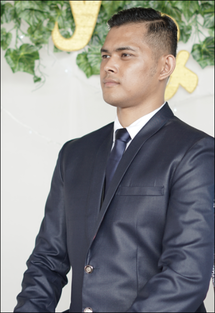
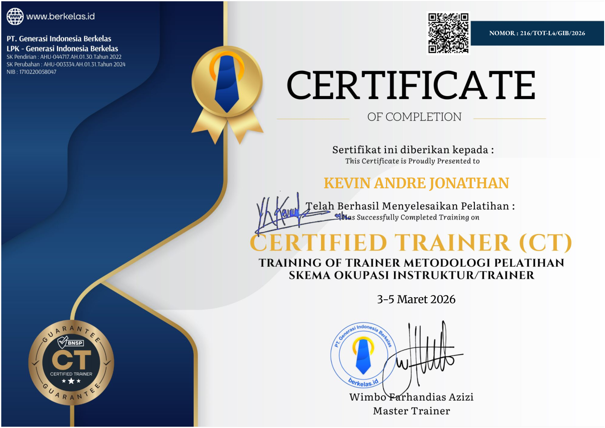
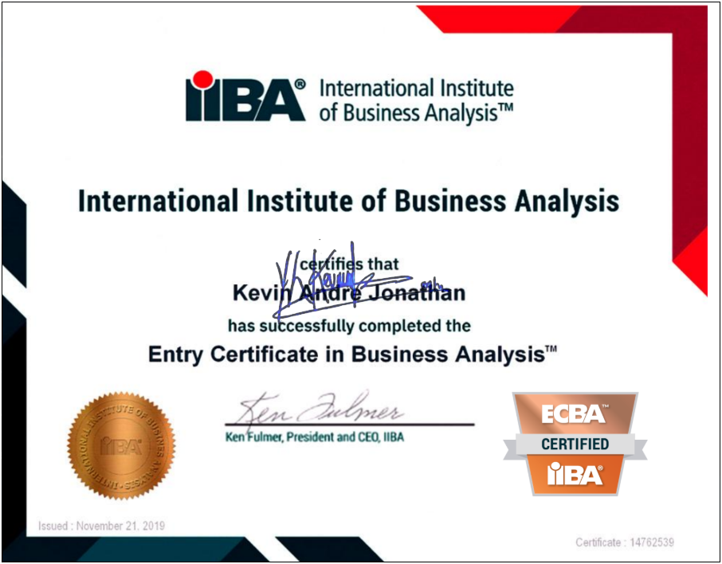
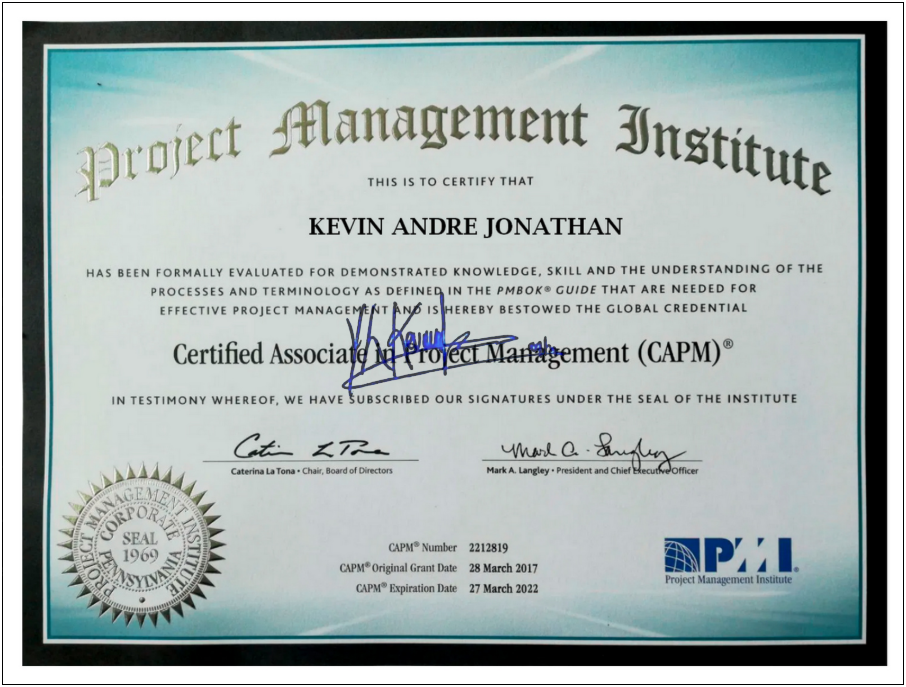
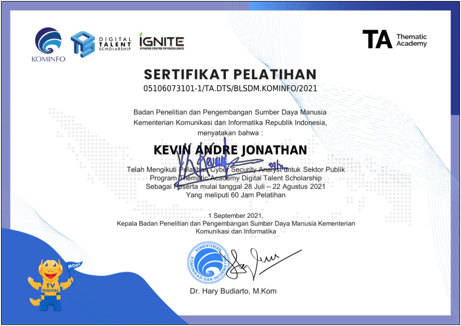
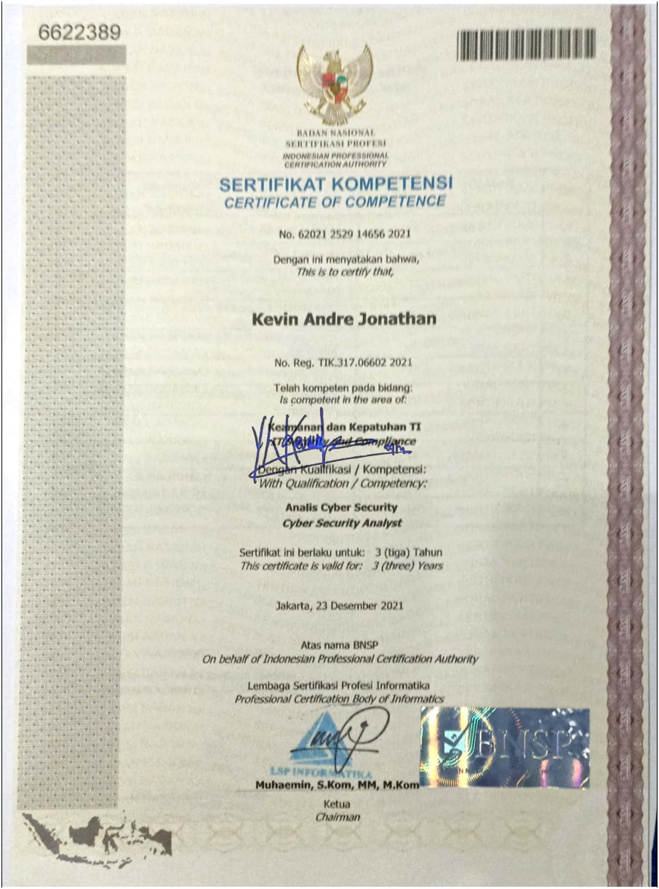
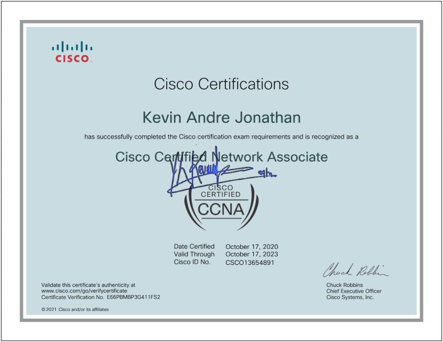
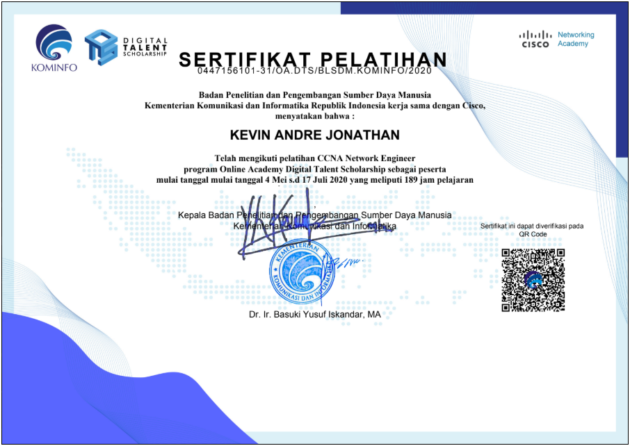
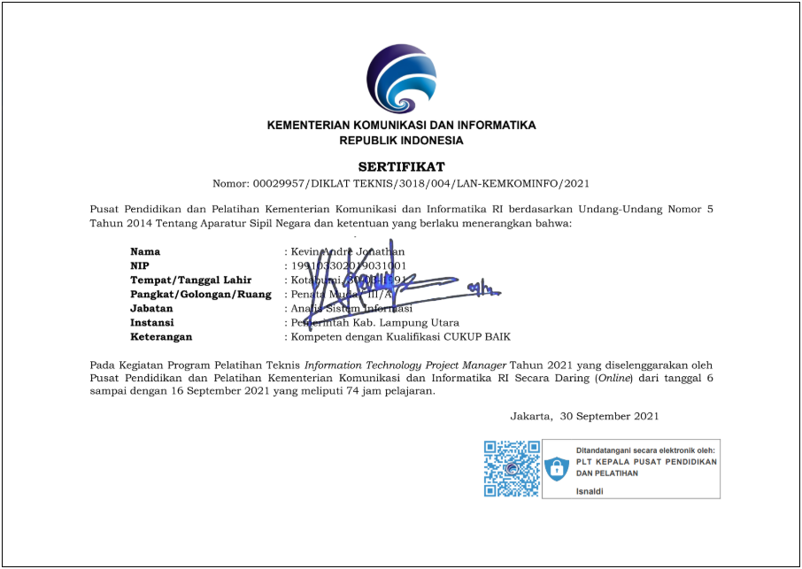

Konsultan strategi dan investasi TI untuk transformasi digital korporasi dan pemerintahan digital. Spesialisasi pada valuasi investasi TI, analisis kebutuhan pra-pengadaan, tata kelola TI, dan arsitektur enterprise.

KT'" >Saya membantu organisasi menjawab satu pertanyaan yang sering diabaikan sebelum pengadaan: apakah investasi TI ini benar-benar layak — dan berapa nilai bisnisnya dalam angka? Praktik saya berdiri di tiga pilar:
Ingin memahami cara kerja pendekatan saya? Baca ringkasan metodologi, atau ikuti kelas dan sesi berbagi terdekat.
Kuantifikasi manfaat bisnis solusi TI melalui kerangka 7 fase: dari identifikasi kebutuhan, pemetaan nilai bisnis, hingga ROI terdiskonto risiko sebagai dasar keputusan investasi.
Layanan advisory bagi vendor dan principal TI untuk membantu klien mereka mendefinisikan kebutuhan dan justifikasi nilai — mempercepat siklus penjualan solusi enterprise.
Menerjemahkan rencana strategis perusahaan menjadi peta jalan digital yang terprioritisasi: portofolio inisiatif, arsitektur target, dan model tata kelola eksekusinya.
Pendampingan kementerian dan pemerintah daerah dalam perencanaan arsitektur SPBE, tata kelola TIK, dan penyusunan justifikasi anggaran berbasis nilai manfaat.
Perancangan arsitektur enterprise dan kerangka tata kelola TI yang menyelaraskan investasi teknologi dengan sasaran bisnis dan regulasi.
Kelas dan pendampingan manajemen investasi TI bagi tim strategi, PMO, dan pengelola TIK — membangun kapabilitas internal yang bertahan setelah engagement selesai.
Membekali tim penjualan vendor dengan analisis kebutuhan dan kalkulasi ROI terdiskonto risiko, memperkuat posisi proposal di hadapan komite anggaran klien.
Menyusun portofolio inisiatif digital tiga tahun dengan prioritisasi berbasis nilai bisnis dan kesiapan organisasi, lengkap dengan model tata kelola eksekusi.
Mendampingi sekretariat daerah menyusun arsitektur SPBE dan kerangka justifikasi belanja TIK berbasis manfaat terukur bagi layanan publik.
Merancang kerangka value-selling yang dipakai jaringan mitra principal untuk mengartikulasikan manfaat bisnis produk di segmen enterprise dan pemerintahan.
Evaluasi kelayakan dan pemetaan manfaat sistem informasi skala nasional sebagai dasar pengambilan keputusan pimpinan dan perencanaan anggaran.
Program pelatihan terstruktur bagi praktisi strategi dan pengelola TIK: dari metodologi valuasi hingga praktik penyusunan business case yang dapat dipertahankan.








Bekerja lintas sektor — dari vendor solusi enterprise hingga sekretariat pemerintah daerah — dengan satu benang merah: keputusan teknologi yang dapat dipertanggungjawabkan.
Tertarik pada advisory strategi TI, pendampingan transformasi digital, kajian investasi pra-pengadaan, atau penerapan pemerintahan digital di organisasi Anda? Hubungi saya kapan saja.